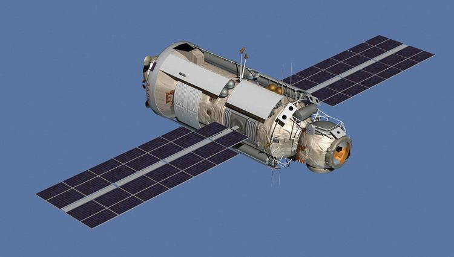

20 ноября 1998 года - «Заря» стала первым запущенным модулем Международной космической станции. FGB предоставил МКС электроэнергию, хранилище, двигатели и руководство на начальной стадии сборки. С запуском и сборкой на орбите других модулей с более специализированными функциями, «Заря» теперь в основном используется для хранения. «Заря» является потомком космического корабля «ТКС», разработанного для российской программы «Салют». Название «Заря», что означает «восход», было дано ФГБ, потому что оно знаменовало начало новой эры международного сотрудничества в космосе. «Заря» была построена в России, но она является собственностью НАСА.
- Запуск - 20 ноября 1998;
- Масса - 19,323 кг;
- Длина - 12.56 м;
- Диаметр - 4.11 м;
